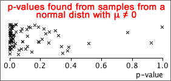

Interpretation of p-values
In all hypothesis tests,
Distribution of p-values
P-values are found from random samples so they have distributions. Regardless of the hypothesis test,
Simulation
Consider a test for whether a population mean is zero:
H0 : µ = 0.0
HA : µ ≠ 0.0
The diagram below shows the p-values from a t-test for these hypotheses, based on several random samples from a normal distribution for which H0 is true. Note that the p-value is equally likely to be anywhere between 0 and 1.

The next diagram shows p-values calculated in the same way, but based on random samples from a normal distribution for which HA is true. Note that the p-value is more likely to be near zero.

Although it is possible to obtain a low p-value when H0 holds and a high p-value when HA holds, low p-values are more likely under HA than under H0.